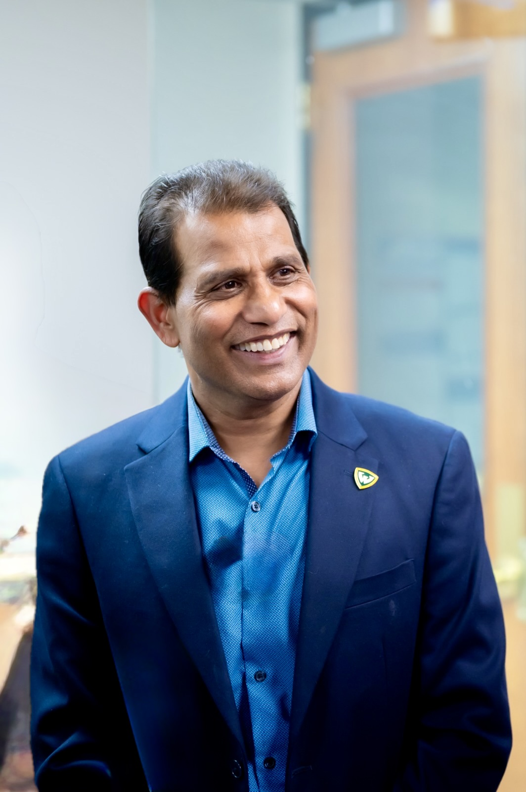

Co-Chair & Treasurer, Michigan GOP
Sunny Reddy serves in dual leadership roles focused on strengthening organizational integrity, financial accountability, and long-term success for the Michigan Republican Party.
Sunny Reddy & the Michigan GOP
Sunny Reddy serves as Co-Chair and Treasurer of the Michigan Republican Party. His leadership focuses on strengthening organizational integrity, financial accountability, and long-term success.
He brings executive leadership experience and a commitment to responsible management across all party operations.
Leadership Role
Co-Chair
Sunny provides leadership that supports organizational growth and unity, working to strengthen the party's presence and effectiveness across Michigan.
Leadership Role
Treasurer
As Treasurer, Sunny focuses on financial accountability and responsible management, reflecting a commitment to transparency and organizational integrity.
Mission & Vision
Sunny's leadership focuses on:
- Financial discipline
- Organizational strength
- Responsible leadership
- Long-term stability
Core Values
His leadership is guided by:
- Integrity
- Accountability
- Discipline
- Leadership
Policy Focus Areas
Sunny supports priorities including:
- Economic growth
- Education
- Organizational leadership
- Community engagement
Sunny participates in leadership events and initiatives focused on strengthening organizational success and community engagement across Michigan.
Contact Information
sunny@mi.gop
Phone+1 248-744-6900
Key Highlights
- Co-Chair, Michigan Republican Party
- Treasurer, Michigan Republican Party
- Focus on financial accountability and transparency
- Experienced executive leader
Long Bio
Sunny Reddy serves in leadership roles as Co-Chair and Treasurer of the Michigan Republican Party, bringing executive leadership experience and a commitment to accountability, financial discipline, and organizational success.
Speak with Sunny
Questions about Michigan leadership, community engagement, or policy? Start a conversation with Sunny's AI.
Access Sunny AI